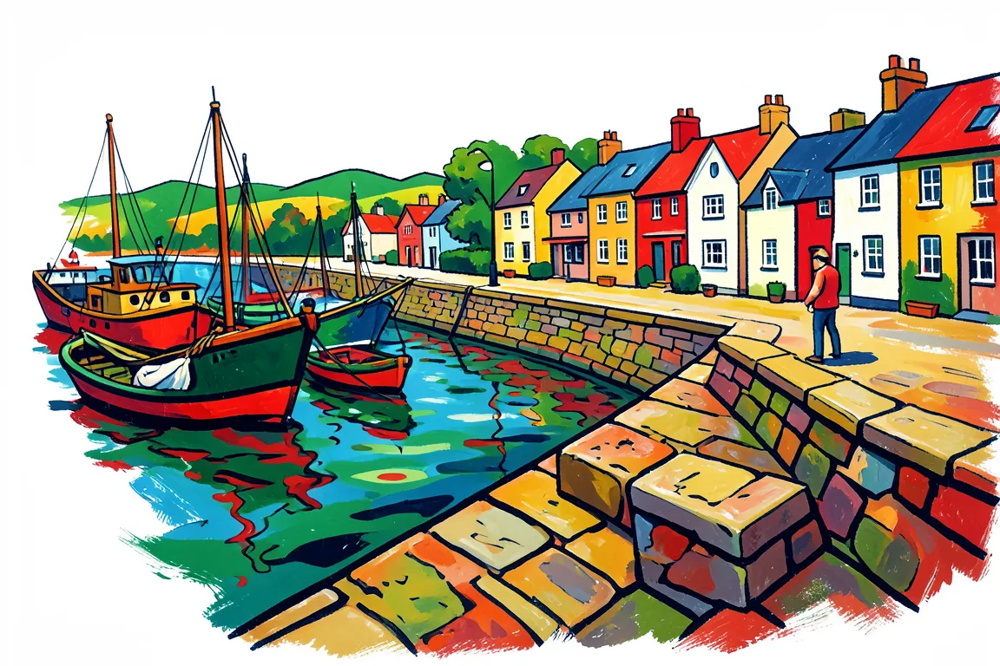

Цвет на полную силу и не по природе: зелёное лицо, оранжевое небо. Плоские пятна, смелые контуры и быстрые мазки делают картину прежде всего сочетанием цветов.

Главная идея
Цвет свободен от предмета: художник выбирает тон за его силу и отношения и так строит картину и чувство одним цветом.
Принципы дизайна
Выбирайте каждый тон за силу, а не за сходство: зелёная тень, красное дерево, синее лицо.
Кладите цвет чистым, прямо из тюбика, большими плоскими пятнами 30–200 мм.
Ставьте сильные контрасты дополнительных пар на полной насыщенности: красное против зелёного, оранжевое против синего.
Обводите формы тёмным или цветным контуром 3–10 мм и оставляйте площадь внутри плоской.
Сплющивайте пространство: сводите глубину к 1–2 слоям и пусть расстояние несёт цвет.
Пишите быстро, с видимым мазком, и оставляйте между пятнами голый фон.
Берите простые сюжеты, такие как пейзаж, порт, портрет и купальщица, и показывайте их смелыми простыми формами.
Антипаттерны
Предметный цвет и тон, верные жизни
Сплавленная плавная лепка, делающая круглую форму
Глубокая перспектива и воздушная дымка
Приглушённые серые и коричневые палитры
Мелкая суетливая деталь и отполированная поверхность